Proposta de redesenho não solicitada, feita por Refeito. Não é o site oficial da JODI Estruturas Metálicas. O site oficial é www.jodi.com.br. Todas as fotos, textos e informações são deles.
Desde 1994 · Caieiras – SP
Atuamos no segmento de Estruturas Metálicas desde 1994 e com departamento próprio de engenharia, executamos obras de médio e grande porte em todo o território nacional, prestando serviços desde particulares a grandes construtoras nas áreas comerciais, industriais e residenciais.
Cobertura, fachada, escada, mezanino, passarela, pergolado, marquise e estroncamento
Obras executadas
Cada obra abaixo está publicada pela Jodi na página de obras executadas dela, sob o tipo em que ela mesma a classifica.
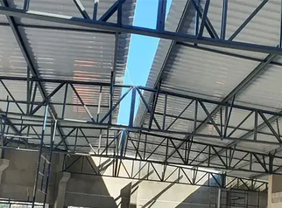
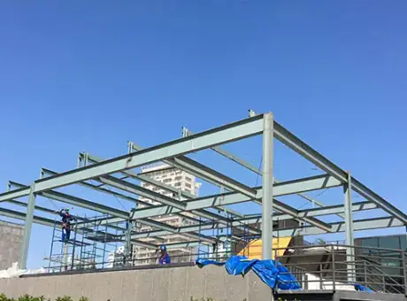
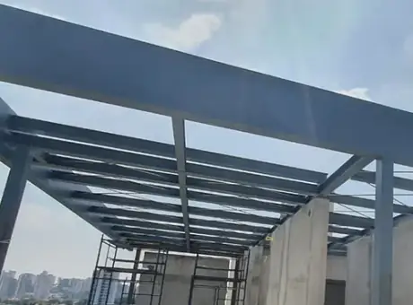
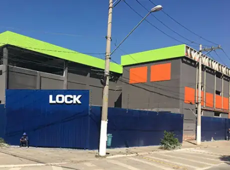
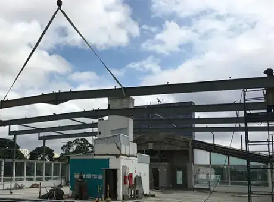
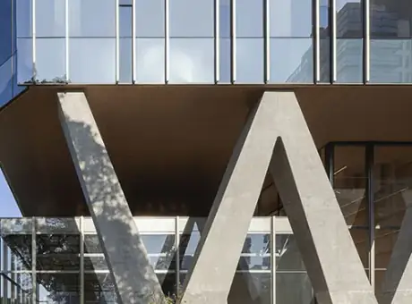
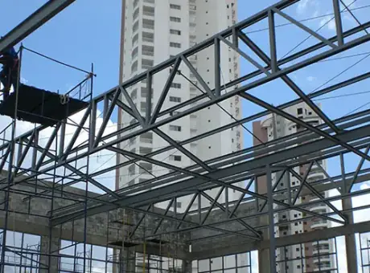
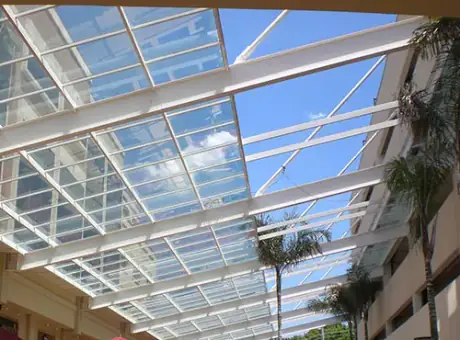
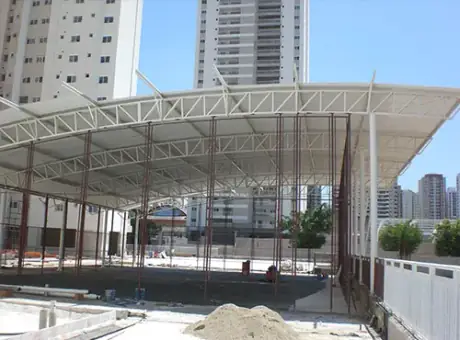
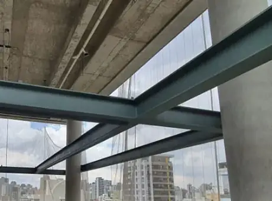
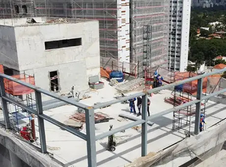
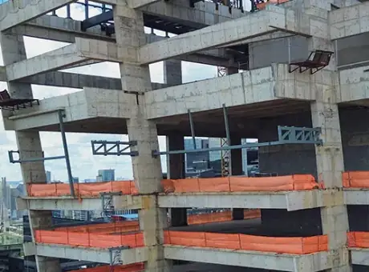
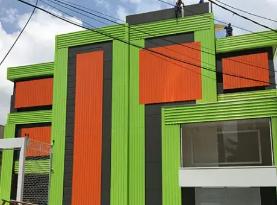
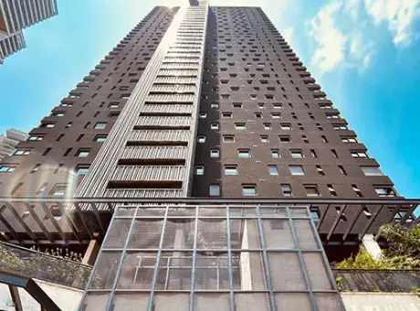
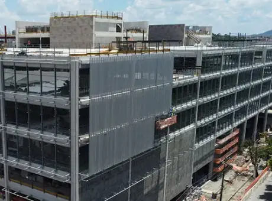
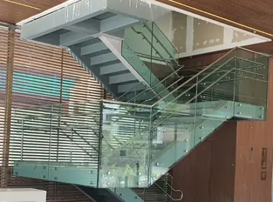
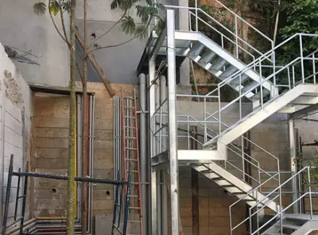
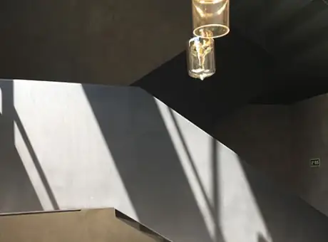
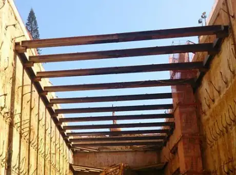
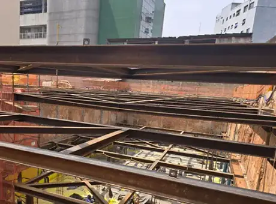
O que a Jodi fabrica
A Jodi publica obra executada em cada um destes tipos. As fotos acima cobrem quatro deles.
Do projeto à montagem
Estamos ao seu lado em todas as etapas, garantindo que cada detalhe seja cuidadosamente planejado e executado.
Contamos com estrutura própria e processos rigorosos de fabricação para garantir qualidade, durabilidade e eficiência em cada projeto entregue.
A montagem é a etapa final que transforma projeto em realidade. Nossa equipe especializada garante precisão, agilidade e segurança em cada instalação.
Entre em contato conosco para discutir suas ideias e necessidades. Nossa equipe estará disponível para esclarecer dúvidas e orientar sobre as melhores soluções.
Após entender seu projeto, elaboramos um orçamento detalhado, considerando todos os aspectos do trabalho, desde a fabricação até a instalação.
Nossa equipe de engenheiros e arquitetos desenvolve o projeto estrutural, garantindo que ele atenda às normas técnicas e às suas expectativas.
As peças são fabricadas em nossa fábrica com total precisão e, em seguida, transportadas para o local da obra. A montagem é realizada por nossa equipe especializada, garantindo segurança e qualidade.
Após a conclusão do projeto, realizamos inspeções rigorosas para garantir que tudo esteja conforme o planejado.
Onde a Jodi entrega
Território de atuação. Obras de médio e grande porte em todo o território nacional, com centenas de obras entregues em todo o Brasil, principalmente em São Paulo.
Fábrica e escritório. É de Caieiras que saem as peças e para onde vai o contato técnico.
R. David Casitzky, 10 — Vila RosinaOrçamento
Mande o que você precisa construir. O orçamento detalhado considera todos os aspectos do trabalho, desde a fabricação até a instalação.
Contato